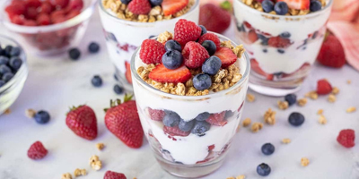

Fruit Yogurt Cup
A smooth and refreshing blend of yogurt and fresh fruit. Light, gentle and perfect for when you crave something sweet without feeling heavy.
Enjoy sweetness without discomfort. These desserts are gentle, light, and perfect for moments when you want something tasty that still feels good for your body.
Explore dessert recipes
Desserts can be comforting and joyful, especially when they are made with ingredients your body
appreciates. A gentle dessert can lift your mood while keeping you comfortable.
These light options give you sweetness without overwhelming your digestion.
SafeBites helps you discover desserts that match your dietary needs. Whether you want something fruity, creamy, or refreshing, these recipes let you enjoy a treat without worrying about discomfort afterward.
Filter the recipes by the diet of your preference:
A smooth and refreshing blend of yogurt and fresh fruit. Light, gentle and perfect for when you crave something sweet without feeling heavy.
A simple, gentle treat with soft chocolate flavor. These little bites satisfy cravings while staying easy on digestion.
Soft apples with a warm, cozy flavor. A gentle dessert that feels comforting and naturally sweet.